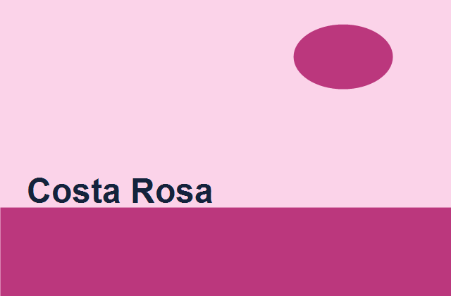
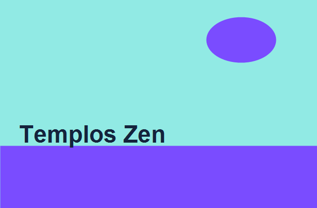
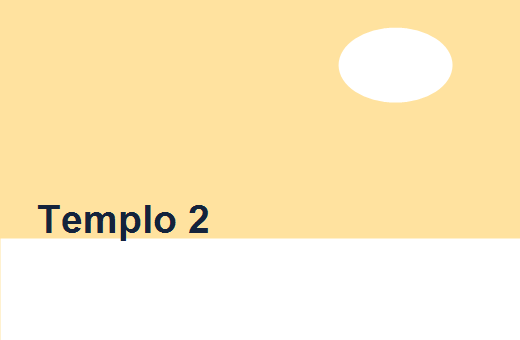
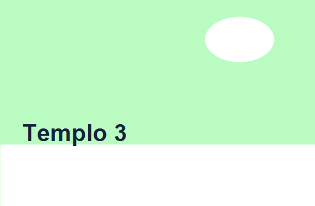

Praia
Costa Rosa
Águas calmas, pousadas charmosas e trilhas leves para fins de tarde inesquecíveis.
4-6 dias
R$ 2.800
Guia de viagem 2026
Curadorias de destinos, dicas práticas e roteiros que economizam tempo e deixam mais espaço para viver cada lugar.
Para transformar inspiração em uma rota bem pensada, siga estes passos práticos:
Use nossas recomendações por estilo para escolher destinos e ajustar durações — clique em Recomendações por estilo para começar.
Seleções com clima, custos médios e experiências únicas para planejar a próxima escapada.

Praia
Águas calmas, pousadas charmosas e trilhas leves para fins de tarde inesquecíveis.

Cultura
Arquitetura milenar, jardins contemplativos e culinária local em cada parada.
Países
Roteiro urbano com museus, cafés e passeios a pé pelas melhores regiões.
Escolha o clima da sua viagem e descubra sugestões com equilíbrio entre descanso e descoberta.
Para quem busca dias de sol, mar transparente e hotéis pé na areia.
Roteiros que combinam espiritualidade, arte e gastronomia tradicional.


Cidades vibrantes com infraestrutura, cultura e experiências gastronômicas.
Um roteiro simples para sair do papel com segurança e flexibilidade.
Escolha se prefere dias intensos ou descansos longos. Isso guia a escolha das cidades.
Inclua hospedagem, transporte interno, passeios e uma margem para imprevistos.
Os melhores horários e preços aparecem com planejamento de 60 a 90 dias.
“O roteiro de praias nos deu tempo para relaxar e explorar sem correria. Voltaríamos amanhã.”
Marina, Recife“Os templos foram incríveis, e as dicas de transporte economizaram muito tempo.”
Leonardo, São Paulo“As sugestões de cidades nos ajudaram a aproveitar museus e gastronomia sem exagero.”
Carla, Curitiba